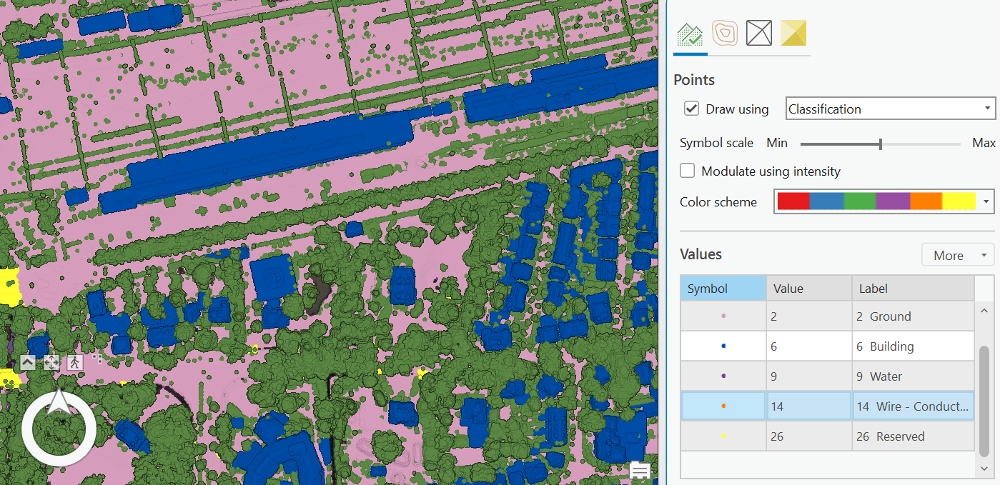

LiDAR map
This interactive LiDAR map presents a detailed 2.5D visualization of Eindhoven, offering an immersive experience that highlights the city's topography and structural features.
About LiDAR:
Light Detection and Ranging (LiDAR) is a remote sensing method that uses laser light to measure distances to the Earth's surface. By emitting laser pulses and measuring the time it takes for them to return, LiDAR generates precise, high-resolution 3D information about the shape and structure of the surface and its features.
This LiDAR map of Eindhoven is a testament to the capabilities of advanced GIS and remote sensing technologies. It not only serves as an educational tool but also as a practical resource for professionals in urban planning, architecture, and environmental science.
The LiDAR imagery can be represented in different ways. In my featured map I decided on height as the main symbology. Alternatively, it is possible to use classification as the symbology type. Then each LiDAR point is assigned a class based on its function. Although this symbology is useful, the LiDAR imagery is not always categorized into the right funtion, therefore the representation can be misleading.
See here a screenshot of the LiDAR map using classification as symbology type: (the colors are meant to best represent each category) 
Analyses:
LiDAR imagery can be used to several different ends. Take for example the measuring of a certain feature such as a building. Arc GIS Pro software is able to measure the difference in height between two LiDAR points, when navigating to a horizontal view. See the image on the left hand side for an example, where the height of a building was measured. Additionally, it is possible to make a crosssection of LiDAR points. This can be used to find the elevation profile of a certain area or to obtain the facade of a building (if carefully executed). See the righyhand screenshot for an example of this.